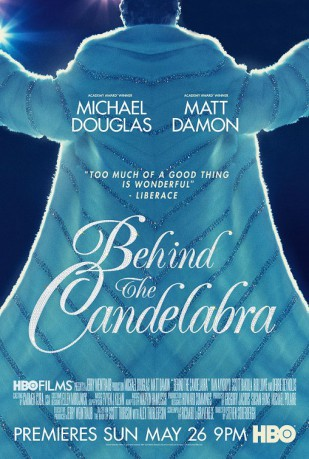
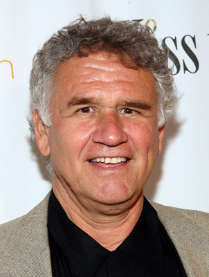

#6059 Liberace - Zuviel des Guten ist wundervoll
Alternativ: Behind the Candelabra
Auszeichnungen: 2 GoldenGlobes gewonnen
 
 IMDB-Wertung: 7.0 / 10
IMDB-Wertung: 7.0 / 10  Metascore: 0
Metascore: 0 
Scott Thorson, a young bisexual man raised in foster homes, is introduced to flamboyant entertainment giant Liberace and quickly finds himself in a romantic relationship with the legendary pianist. Swaddled in wealth and excess, Scott and Liberace have a long affair, one that eventually Scott begins to find suffocating. Kept away from the outside world by the flashily effeminate yet deeply closeted Liberace, and submitting to extreme makeovers and even plastic surgery at the behest of his lover, Scott eventually rebels. When Liberace finds himself a new lover, Scott is tossed on the street. He then seeks legal redress for what he feels he has lost. But throughout, the bond between the young man and the star never completely tears.
Jahr: 2013
Dauer: 118 Minuten
FSK: 12
Land: USA Studio: HBOTonspuren: DTS - ,
Untertitel: Deutsch,
Auflösung: 1080p (1920x1080) Größe: 8069 MB
Genre: Drama, Liebe, Biographie
Regisseur:  Steven Soderbergh
Steven Soderbergh
Drehbuch: Leslie Cockburn
Soundtrack:
Darsteller:
 Matt Damon als Scott Thorson
Matt Damon als Scott Thorson Scott Bakula als Bob Black
Scott Bakula als Bob Black- Eric Zuckerman als Lou
 Eddie Jemison als Assistant Director
Eddie Jemison als Assistant Director- Randy Lowell als Director
 Jane Morris als Rose Carracappa
Jane Morris als Rose Carracappa-  Garrett M. Brown als Joe Carracappa
 Michael Douglas als Liberace
Michael Douglas als Liberace- Pat Asanti als George Liberace
 Debbie Reynolds als Frances Liberace
Debbie Reynolds als Frances Liberace- Casey Kramer als Dora Liberace
 Cheyenne Jackson als Billy Leatherwood
Cheyenne Jackson als Billy Leatherwood- Tom Papa als Ray Arnett
 Dan Aykroyd als Seymour Heller
Dan Aykroyd als Seymour Heller Bruce Ramsay als Carlucci
Bruce Ramsay als Carlucci- Paul Witten als Make-Up Artist
- Deborah Lacey als Gladys
 Rob Lowe als Dr. Jack Startz
Rob Lowe als Dr. Jack Startz David Koechner als Adoption Attorney
David Koechner als Adoption Attorney Nicky Katt als Mr. Y
Nicky Katt als Mr. Y Austin Stowell als Backstage Flirt
Austin Stowell als Backstage Flirt- Francisco San Martin als Backstage Flirt
 Boyd Holbrook als Cary James
Boyd Holbrook als Cary James- Anthony Crivello als Stagehand
 Mike O'Malley als Tracy Schnelker
Mike O'Malley als Tracy Schnelker Kiff VandenHeuvel als Scott's Half Brother, Wayne
Kiff VandenHeuvel als Scott's Half Brother, Wayne- Nikea Gamby-Turner als Dorothy
- Josh Meyers als Liberace's Attorney
 Paul Reiser als Scott's Attorney
Paul Reiser als Scott's Attorney- Jerry Clarke als Dr. Ronald Daniels
- Lisa Frantz als Anchorwoman
- Shaun T. Benjamin als Health Department Spokesman
- Kelly Allen als Young American Dancer , uncredited
- Cassandra M. Bellantoni als Hospital Visitor , uncredited
 Cici Leah Campbell als Fan Outside Dressing Room , uncredited
Cici Leah Campbell als Fan Outside Dressing Room , uncredited Johnny Carson als Himself , archive footage, uncredited
Johnny Carson als Himself , archive footage, uncredited- Nathan Collins als Print Reporter , uncredited
 Timothy Skyler Dunigan als Concert Fan / Driver , uncredited
Timothy Skyler Dunigan als Concert Fan / Driver , uncredited- Fielding Edlow als Deposition Reporter , uncredited
- Corey Eid als French Guy #2 , uncredited
 Krystal Ellsworth als Impossible Dream Dancer , uncredited
Krystal Ellsworth als Impossible Dream Dancer , uncredited- Kelli Erdmann als Young American Dancer , uncredited
- Amber Lee Ettinger als Hair Stylist , uncredited
- Joe Filippone als Adult Bookstore Patron , uncredited
- Jack Fitz als Midwestern Husband , uncredited
- Aussie Guevara als Sex Club Worker , uncredited
 Brandon Henschel als Dancer , uncredited
Brandon Henschel als Dancer , uncredited- Lenny Jacobson als Stage Manager , uncredited
 Richard Allan Jones als Mourner , uncredited
Richard Allan Jones als Mourner , uncredited- Adam J. Kassel als Valet , uncredited
Datei: X:\2013(I-M)\Liberace - Zuviel des Guten ist wundervoll (2013, FSK12, 1920x1080).mkv seit 25.04.2017
Festplatte: HD 2013(I-Z)-2014(A-Z)
 Es gibt insgesamt 89 Filme in der Gruppe '2013(I-M)'
Es gibt insgesamt 89 Filme in der Gruppe '2013(I-M)'